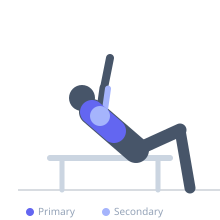
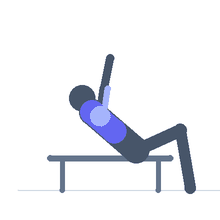

Exercise guide / Incline Lever Machine Alternating Press
Incline Lever Machine Alternating Press
A machine incline chest press performed in an alternating arm pattern rather than simultaneously. Each arm presses independently while the other holds the contracted or extended position. The alternating pattern creates greater focus on each side individually, allows detection of left-right strength imbalances, and increases the total time under tension per set compared to bilateral pressing.
Primary muscles
pectoralis major clavicular
Secondary muscles
triceps lateral head
deltoid anterior
Stabilizers
pectoralis minor
internal oblique
Equipment
Shoulder Press Machine


Starting position
- Sit in an incline chest press machine. Grip both handles with an overhand grip. Adjust the seat height so the handles are at upper chest level. Begin with both arms in the loaded (retracted) position.
Setup
- Set the seat height so the handles align with the upper chest/clavicle. Select a moderate weight appropriate for single-arm pressing (lighter than bilateral weight).
Steps
- Step 1: Begin with both arms loaded at the chest. Press the right arm to full extension.
- Step 2: Hold the right arm extended. Begin pressing the left arm to full extension.
- Step 3: Return the right arm to the loaded position as the left arm finishes its extension.
- Step 4: Alternate: right press → left press → right return → left return. Each full alternating cycle is one rep.
Coaching cues
- Press one side, hold the other — do not let the resting arm drop completely
- Keep shoulders square — the alternating load tries to rotate you
Breathing
- Exhale as each arm presses, inhale as it returns. Breathing rhythm may need to be adapted to the alternating cadence.
Range of motion
- Full extension on each arm, fully loaded at the bottom. Each arm completes a full range per alternation.
Tempo
- 2-1-2-1 per arm cycle
Common mistakes
- Rotating the torso to assist the pressing arm — keep shoulders square
- Resting at the loaded position rather than maintaining active tension
- Pressing too fast to maintain control of the alternating pattern
Safety
- Machine provides a fixed path — ensure seat height is correct before beginning
- If the machine does not allow true alternating independent arms, perform standard bilateral pressing instead
Training
- hypertrophy: 10–15 reps
- endurance: 15–20 reps
- hypertrophy: 3–4 sets
- Rest: {'hypertrophy': 75}